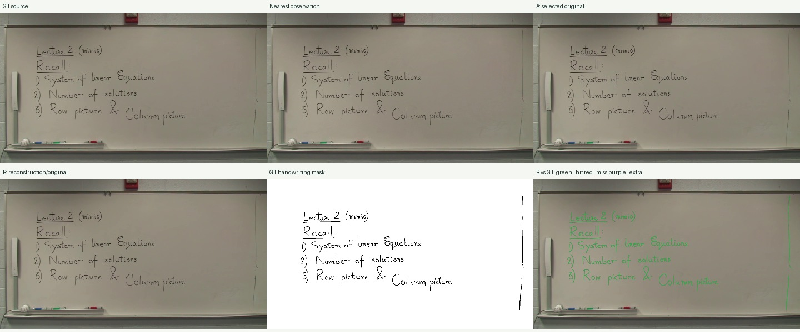
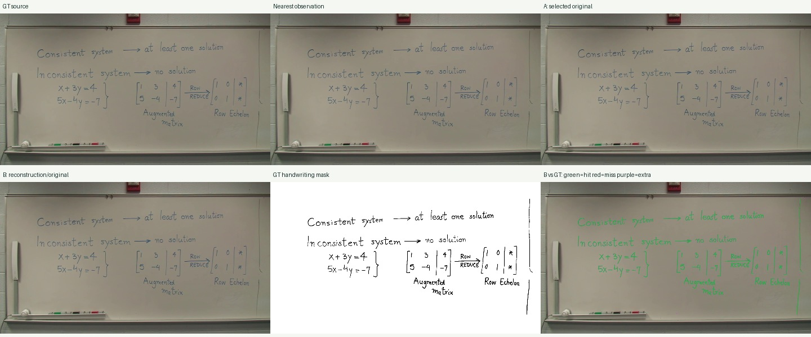
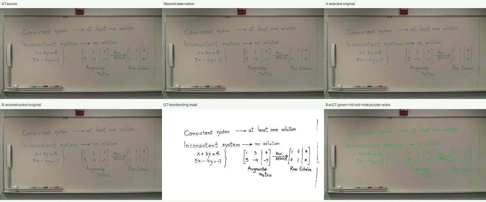
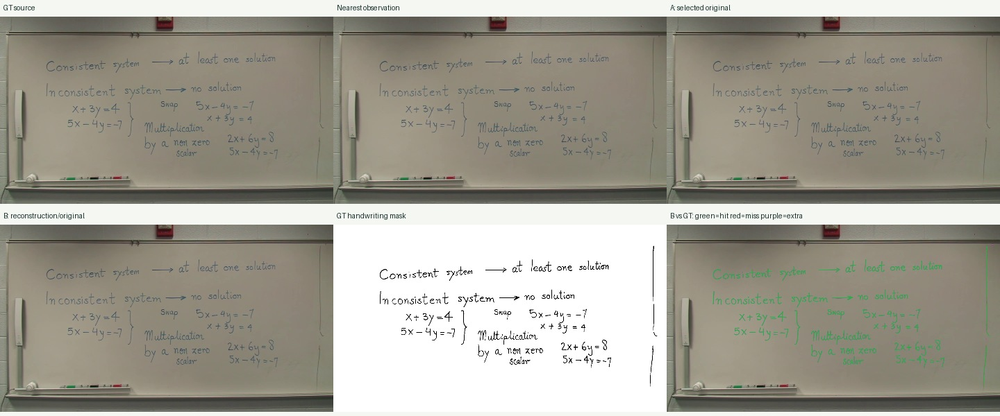
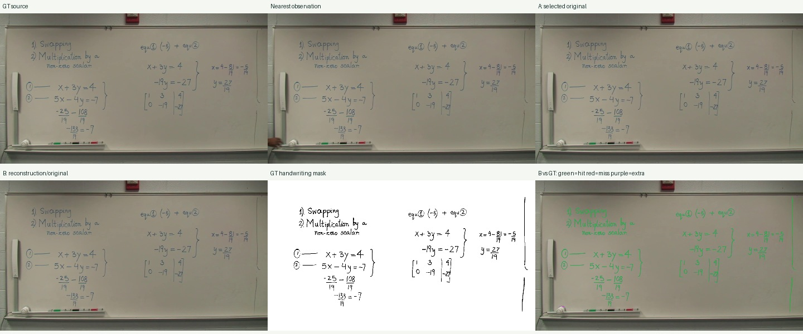
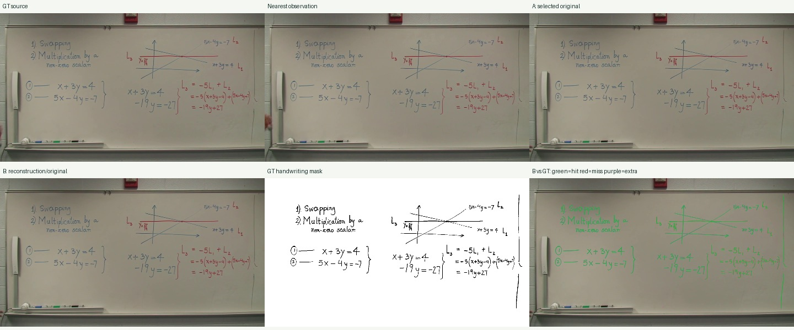
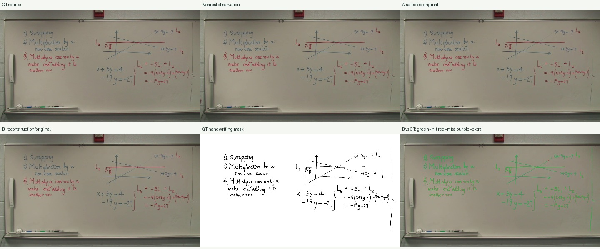
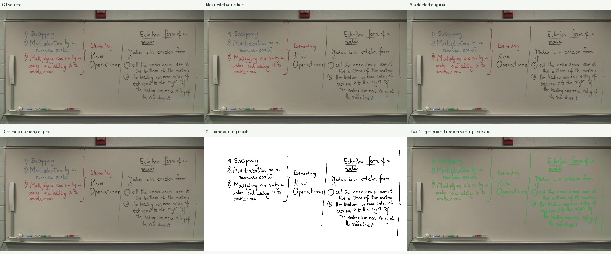
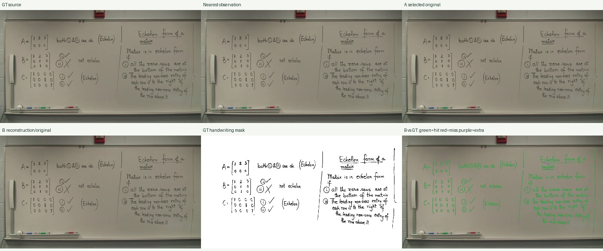
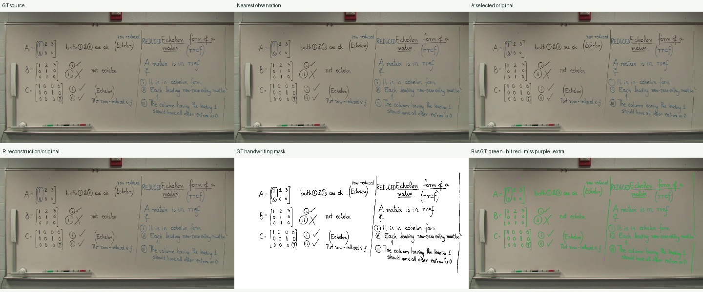

기존 알고리즘·기본 설정 고정. testing 분할의 진단 실행이며 전체 데이터셋 또는 공식 unique-CC 벤치마크 점수가 아닙니다.
A/B는 각 정답 시각이 속한 상태의 결과를 선택합니다. 정답을 보고 가장 좋은 프레임을 고르지 않습니다. 세 가지 이진화 임계값과 GT 원본에 같은 이진화를 적용한 보정 결과를 report.json에 제공합니다.
전체 프로토콜·결과 JSON원본 1920×1080, 2599.56초 · 관측 5194개 · 상태 712개
| GT 시각 | 선택 시각 | B 상태 | A recall / precision | B recall / precision | GT 자체 recall |
|---|---|---|---|---|---|
| 140.37 | 143.64 | fallback | 1.000 / 0.998 | 1.000 / 0.998 | 1.000 |
| 441.71 | 453.45 | fallback | 1.000 / 0.999 | 1.000 / 0.999 | 1.000 |
| 513.61 | 513.01 | fallback | 1.000 / 0.999 | 1.000 / 0.999 | 1.000 |
| 743.58 | 743.74 | fallback | 1.000 / 0.999 | 1.000 / 0.999 | 1.000 |
| 1109.37 | 1107.61 | fallback | 1.000 / 0.997 | 1.000 / 0.997 | 1.000 |
| 1488.19 | 1488.49 | fallback | 1.000 / 0.999 | 1.000 / 0.999 | 0.999 |
| 1555.95 | 1555.05 | fallback | 0.999 / 0.999 | 0.999 / 0.999 | 1.000 |
| 1915.25 | 1913.91 | fallback | 1.000 / 0.998 | 1.000 / 0.998 | 1.000 |
| 2169.07 | 2178.68 | fallback | 1.000 / 0.997 | 1.000 / 0.997 | 1.000 |
| 2569.57 | 2570.07 | fallback | 1.000 / 0.998 | 1.000 / 0.998 | 1.000 |
표는 임계값 10. 붉은 정답 필기 누락과 보라색 추가 검출은 이진화 오차를 포함합니다. 원본 GT 자체의 회수율과 함께 해석해야 합니다.









